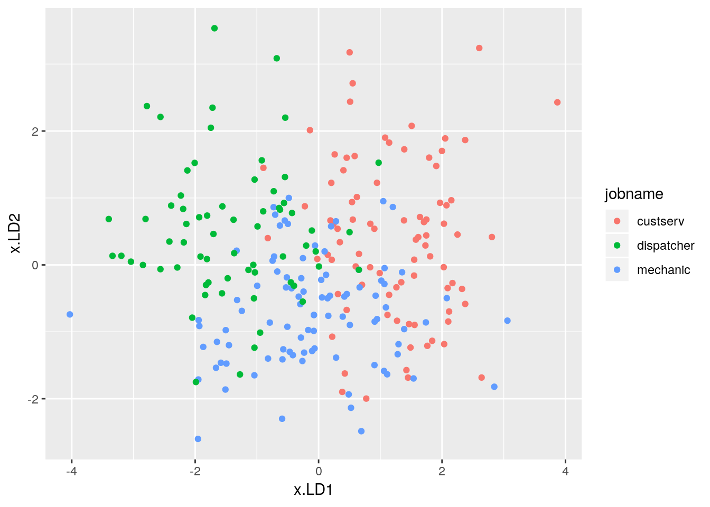

A miscellany: mutate_at, rename_at, str_replace and summary
Packages
library(MASS)
library(tidyverse)## ── Attaching packages ────────────────────────────────────────────────────────────────────────────────────────────── tidyverse 1.2.1 ──## ✔ ggplot2 3.1.0 ✔ purrr 0.3.1
## ✔ tibble 2.0.1 ✔ dplyr 0.8.0.1
## ✔ tidyr 0.8.3 ✔ stringr 1.4.0
## ✔ readr 1.3.1 ✔ forcats 0.3.0## ── Conflicts ───────────────────────────────────────────────────────────────────────────────────────────────── tidyverse_conflicts() ──
## ✖ dplyr::filter() masks stats::filter()
## ✖ dplyr::lag() masks stats::lag()
## ✖ dplyr::select() masks MASS::select()Introduction
Take a look at this data set:
my_url="http://www.utsc.utoronto.ca/~butler/d29/jobs.txt"
(jobs0=read_table(my_url))## Parsed with column specification:
## cols(
## outdoor = col_double(),
## social = col_double(),
## conservative = col_double(),
## job = col_double(),
## id = col_double()
## )## # A tibble: 244 x 5
## outdoor social conservative job id
## <dbl> <dbl> <dbl> <dbl> <dbl>
## 1 10 22 5 1 1
## 2 14 17 6 1 2
## 3 19 33 7 1 3
## 4 14 29 12 1 4
## 5 14 25 7 1 5
## 6 20 25 12 1 6
## 7 6 18 4 1 7
## 8 13 27 7 1 8
## 9 18 31 9 1 9
## 10 16 35 13 1 10
## # … with 234 more rowsThis is 244 people who have one of three different jobs, customer service, mechanic and dispatcher. Each person also has scores on three different scales, in the first three columns. Can we tell, based on the scores on outdoor, social and conservative, what kind of job a person might do?
Before we start, I’d rather have those jobs as text rather than having to remember what those numbers stand for. Let’s create a lookup table:
lookup_tab=tribble(
~job, ~jobname,
1, "custserv",
2, "mechanic",
3, "dispatcher"
)
lookup_tab## # A tibble: 3 x 2
## job jobname
## <dbl> <chr>
## 1 1 custserv
## 2 2 mechanic
## 3 3 dispatcherand then look up those jobs. I carefully made the numerical jobs be called job in both places, so it’s the easy form of left_join. I have never used right_join. I think it would confuse me too much.
(jobs0 %>% left_join(lookup_tab) -> jobs)## Joining, by = "job"## # A tibble: 244 x 6
## outdoor social conservative job id jobname
## <dbl> <dbl> <dbl> <dbl> <dbl> <chr>
## 1 10 22 5 1 1 custserv
## 2 14 17 6 1 2 custserv
## 3 19 33 7 1 3 custserv
## 4 14 29 12 1 4 custserv
## 5 14 25 7 1 5 custserv
## 6 20 25 12 1 6 custserv
## 7 6 18 4 1 7 custserv
## 8 13 27 7 1 8 custserv
## 9 18 31 9 1 9 custserv
## 10 16 35 13 1 10 custserv
## # … with 234 more rowsSo now we have jobname as the text version of the original job.
A discriminant analysis
One way of understanding data like this is a discriminant analysis. The details of this don’t matter; the important thing is that we get output that is too long to handle, thus:
jobs.1=lda(jobname~outdoor+social+conservative, data=jobs)
p=predict(jobs.1)
d=cbind(jobs, p)
head(d)## outdoor social conservative job id jobname class posterior.custserv
## 1 10 22 5 1 1 custserv custserv 0.9037622
## 2 14 17 6 1 2 custserv mechanic 0.3677743
## 3 19 33 7 1 3 custserv custserv 0.7302117
## 4 14 29 12 1 4 custserv custserv 0.8100756
## 5 14 25 7 1 5 custserv custserv 0.7677607
## 6 20 25 12 1 6 custserv mechanic 0.1682521
## posterior.dispatcher posterior.mechanic x.LD1 x.LD2
## 1 0.0072899882 0.08894785 1.6423155 0.71477348
## 2 0.1432467601 0.48897890 0.1480302 0.15096436
## 3 0.0003186265 0.26946971 2.6415213 -1.68326115
## 4 0.0077512155 0.18217319 1.5493681 0.07764901
## 5 0.0071854904 0.22505382 1.5472314 -0.15994117
## 6 0.0469230463 0.78482488 0.2203876 -1.07331266I apologize for the non-tidyverse cbind in there. The trouble is that p is actually a list, and I would have to pull its constituent bits out to use bind_cols. The downside is that d is no longer a tibble so I have to display it with care.
Anyway, we have a data frame with a lot of columns, some of which have long names and/or a lot of decimals.
Rounding off a bunch of columns with mutate_at
The columns I am interested in here have names that begin with posterior (and are rather long, but we come to that.) These are posterior probabilities that a person has a job of customer service, dispatcher or mechanic, given the scores they got on the three scales. (The highest of the three for each person is our best guess of what job they actually have, and is in class.) I want to eyeball these, and it is hard to do if they have a lot of decimals or are in scientific notation. Let’s round the columns whose names start with posterior to three decimals. mutate_at will help us with this:
d %>% mutate_at(vars(starts_with("posterior")), ~round(., 3)) -> d1
head(d1)## outdoor social conservative job id jobname class posterior.custserv
## 1 10 22 5 1 1 custserv custserv 0.904
## 2 14 17 6 1 2 custserv mechanic 0.368
## 3 19 33 7 1 3 custserv custserv 0.730
## 4 14 29 12 1 4 custserv custserv 0.810
## 5 14 25 7 1 5 custserv custserv 0.768
## 6 20 25 12 1 6 custserv mechanic 0.168
## posterior.dispatcher posterior.mechanic x.LD1 x.LD2
## 1 0.007 0.089 1.6423155 0.71477348
## 2 0.143 0.489 0.1480302 0.15096436
## 3 0.000 0.269 2.6415213 -1.68326115
## 4 0.008 0.182 1.5493681 0.07764901
## 5 0.007 0.225 1.5472314 -0.15994117
## 6 0.047 0.785 0.2203876 -1.07331266The _at functions take a specification of columns, by number or name or, as here, a select-helper, and then a function to apply to each of those columns. This is specified in a map-like way: “for each of the columns whose name starts with posterior, round it to three decimals”. The result gets saved over top of the original column; you can optionally save it under a new column name.
The _at functions work with columns selected somehow by name; the _if functions work with columns that have some property such as being text. One of those is coming up later.
Shortening column names that are too long with rename_at
We have the values short enough to look at, but the column names are still too long. How can we shorten them? rename_at.
The columns with names like posterior.custserv ought to have names like p.custserv. So what we are aiming for is to look for all column names that start with posterior and text-replace the posterior with p. This last uses the stringr function str_replace which requires three inputs: a string, a piece of text to look for, and another piece of text to replace it with.
The English-language version of the rename_at below is “for each of the columns whose name starts with posterior, in it replace the text posterior (in its column name) with the text p”.
d1 %>%
rename_at(vars(starts_with("posterior")), ~str_replace(., "posterior", "p")) -> d2
head(d2)## outdoor social conservative job id jobname class p.custserv
## 1 10 22 5 1 1 custserv custserv 0.904
## 2 14 17 6 1 2 custserv mechanic 0.368
## 3 19 33 7 1 3 custserv custserv 0.730
## 4 14 29 12 1 4 custserv custserv 0.810
## 5 14 25 7 1 5 custserv custserv 0.768
## 6 20 25 12 1 6 custserv mechanic 0.168
## p.dispatcher p.mechanic x.LD1 x.LD2
## 1 0.007 0.089 1.6423155 0.71477348
## 2 0.143 0.489 0.1480302 0.15096436
## 3 0.000 0.269 2.6415213 -1.68326115
## 4 0.008 0.182 1.5493681 0.07764901
## 5 0.007 0.225 1.5472314 -0.15994117
## 6 0.047 0.785 0.2203876 -1.07331266This is a much more pleasant display, of the posterior probabilities at least. We can see that the first individual is almost certainly in customer service, the second individual could reasonably be customer service or a mechanic, and so on.
A brief digression into discriminant analysis
How do the scores on the three scales play into what job an individual might do? That’s where the discriminant analysis output comes in:
jobs.1## Call:
## lda(jobname ~ outdoor + social + conservative, data = jobs)
##
## Prior probabilities of groups:
## custserv dispatcher mechanic
## 0.3483607 0.2704918 0.3811475
##
## Group means:
## outdoor social conservative
## custserv 12.51765 24.22353 9.023529
## dispatcher 15.57576 15.45455 13.242424
## mechanic 18.53763 21.13978 10.139785
##
## Coefficients of linear discriminants:
## LD1 LD2
## outdoor -0.09198065 -0.22501431
## social 0.19427415 -0.04978105
## conservative -0.15499199 0.08734288
##
## Proportion of trace:
## LD1 LD2
## 0.7712 0.2288Right down at the bottom:
- the very bottom table says that LD1 is more important than LD2 (we’ll come to what that means)
- the “coefficients of linear discriminants” above it says that LD1 depends positively on
socialand negatively onconservative(and to a lesser extent negatively onoutdooralso) - LD2 depends mostly (and negatively) on
outdoor.
The LD’s are a way of reducing our three variables to fewer, by focusing on what distinguishes the jobs best. The value of that is that we can plot the LD1 and LD2 scores (labelling the points by job name), because there are only two of them (here), whereas there were three original variables and we would have needed a 3D plot to plot them.
So a person who is high on social and/or low on conservative will have a high score on LD1; a person with a high score on outdoor will have a low score on LD2 (negative coefficient).
But what are high and low scores? For that, read on.
summary and text variables
The first point of call for an old-stager like me is to feed the data frame into summary:
summary(jobs)## outdoor social conservative job
## Min. : 0.00 Min. : 7.00 Min. : 0.00 Min. :1.000
## 1st Qu.:13.00 1st Qu.:17.00 1st Qu.: 8.00 1st Qu.:1.000
## Median :16.00 Median :21.00 Median :11.00 Median :2.000
## Mean :15.64 Mean :20.68 Mean :10.59 Mean :1.922
## 3rd Qu.:19.00 3rd Qu.:25.00 3rd Qu.:13.00 3rd Qu.:3.000
## Max. :28.00 Max. :35.00 Max. :20.00 Max. :3.000
## id jobname
## Min. : 1.00 Length:244
## 1st Qu.:21.00 Class :character
## Median :41.00 Mode :character
## Mean :41.95
## 3rd Qu.:61.25
## Max. :93.00This produces a five-number summary of the numerical variables, which is good, but that summary of jobname is no help at all!
Some historical perspective: back in the days of read.table and friends, text got immediately turned into factors (unless you took trouble to stop it happening). So maybe turning jobname (and any other text variables we might happen to have) into factors might help:
jobs %>% mutate_if(is.character, ~factor(.)) %>% summary()## outdoor social conservative job
## Min. : 0.00 Min. : 7.00 Min. : 0.00 Min. :1.000
## 1st Qu.:13.00 1st Qu.:17.00 1st Qu.: 8.00 1st Qu.:1.000
## Median :16.00 Median :21.00 Median :11.00 Median :2.000
## Mean :15.64 Mean :20.68 Mean :10.59 Mean :1.922
## 3rd Qu.:19.00 3rd Qu.:25.00 3rd Qu.:13.00 3rd Qu.:3.000
## Max. :28.00 Max. :35.00 Max. :20.00 Max. :3.000
## id jobname
## Min. : 1.00 custserv :85
## 1st Qu.:21.00 dispatcher:66
## Median :41.00 mechanic :93
## Mean :41.95
## 3rd Qu.:61.25
## Max. :93.00Oh yes, that shows how many people of each job we have, which is much more helpful. If there were missing values, we would see those here as well.
The mutate_if says “for each column that is text (has the property of being character), run factor on it”, temporarily creating a factor for the purpose of passing it into summary.
These days, we would probably use skim from skimr, which is more flexible and handles text variables properly.
Completing the analysis
With all that in mind, why was that first individual almost certainly in customer service?
d2 %>% head(1)## outdoor social conservative job id jobname class p.custserv
## 1 10 22 5 1 1 custserv custserv 0.904
## p.dispatcher p.mechanic x.LD1 x.LD2
## 1 0.007 0.089 1.642316 0.7147735Their scores were 10 on outdoor, 22 on social and 5 on conservative. According to the summary, this is low on outdoor, above the median on social and low on conservative. High social and low conservative makes this person high on LD1, and low outdoor makes this person high on LD2. The output above shows also that this individual’s LD1 score is 1.64 and LD2 score is 0.71, both clearly positive.
To see where that puts them relative to others with the same job, we can plot all the LD1 and LD2 scores, with the actual job in colour:
The value of this kind of analysis is that it doesn’t matter how many variables you have; you can always plot the first two LD scores, which will give you the best two-dimensional picture of how the individuals are separated into groups.
ggplot(d, aes(x=x.LD1, y=x.LD2, colour=jobname))+geom_point()
High LD1 and high LD2 puts this person squarely in with the red dots that represent customer service. With this kind of profile, it is unlikely that person #1 does any other kind of job. There is a little overlap between the colours, but not all that much.